iFit: plotting iData objects
Commands we use in this page: plot, subplot, xlabel, xlim, title, saveas
Plotting objects in a
single pane (plot)
The main plot method for iData objects is plot. It works
for objects up to ndims(a)<=3.
Further
dimensionality
objects
may
be visualized by means of
projections and slices, as seen below.
Plots for 1D objects
Let us import a simple 1D (vector Signal=f(x)
) data set into an iData object, and
plot it:
>> a=load(iData, 'iFit/Data/sv1850.scn')
>> plot(a);
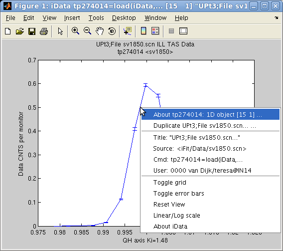 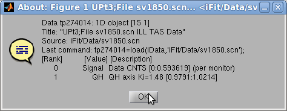
A standard Matlab figure appears, with the Signal and the Axis of rank 1. The curve itself
can be right-cliked in order to pop-up a contextual menu which provides
(see left image):
- an information dialog about the object (see right image above) and
the iFit/iData library version,
- the possibility to duplicate the view into an other window,
- simple ways to toggle a grid and error bar display,
- simple way to toggle linear or log scale for the Signal
- a 'Reset view' item to
re-plot the initial object view.
Tip: in case the contextual
menu item linear/log toggle does not satisfy your expectations, you may
try to directly plot the log of the object with (see Math operators)
>> plot( log10(a) );
As for any Matlab window, it may be edited using the arrow tool which
allows
to
double-click
the
labels, title, the axes and the curve in
order to change e.g. the fonts, the text to show, the colors.
The zoom tool is also pretty useful (hey
?). To revert to the full view, double click on the figure, or select
the contextual menu item 'Reset view'.
The Matlab documentation about Graphics/Plots
and
Plotting
Tools/Figures,
Plots,
and Graphs provides a full
description of all the tools available in Matlab plot windows. Most of
the functionality can also be accessed from the Figure menus. We
encourage you to read all this, especially late at night in winter.
Additional arguments can be given to plot in order to specify the line
style and color, such as in the standard Matlab plot function, e.g. plot(a,'r--') to draw a red dashed
line. The h=plot(...)
function
returns a Matlab graphics handle (this is usually a number). It may be
used to perform further access and modification to the view.
Plots for 2D objects
Similarly
as
for 1D objects, plots can be generated for 2D objects Signal=f(x,y), and show them up as
surfaces:
>> a=load(iData, 'iFit/Data/ILL_D10.dat')
>> plot(a);
which results in a surface plot as shown aside.
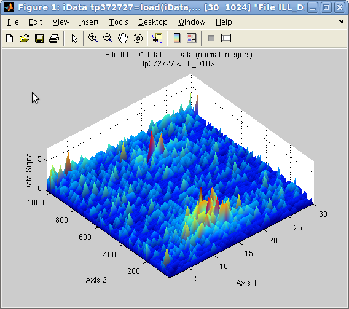
Plot 2D: plot(a) with smooth
view
Alternate rendering can be obtained with the plot options:
>> a=iData(peaks);
>> plot(a); % a surface
>> plot(a,'mesh'); % a wired mesh
>> plot(a,'contour'); % contour plot
>> plot(a,'contourf');% contour plot with filled regions
>> plot(a,'surfc'); % a surface with contour plot below
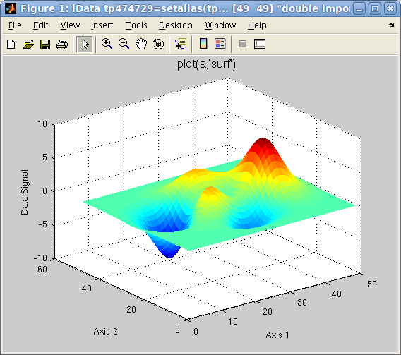
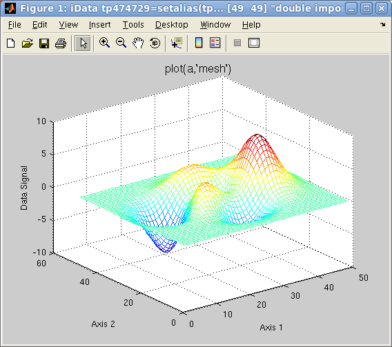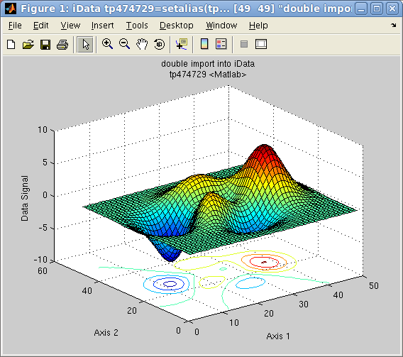
Plot 2D: left=plot(a),
center=plot(a,'mesh'),
right=plot(a,'surfc')
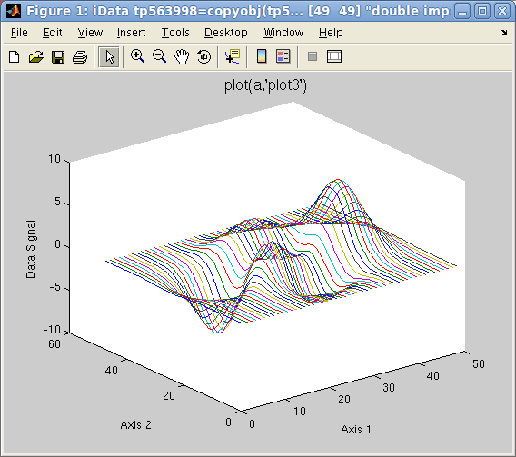
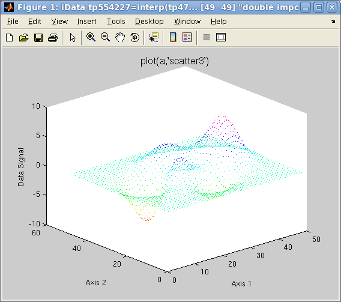
Plot 2D: left=plot(a,'plot3'),
right=plot(a,'scatter3')
It is possible, by
right-clicking on the surface or the axis lines, to pop-up a contextual
menu which
provides the following operations:
- an information dialog about the object (see right image above) and
the iFit/iData library version,
- the possibility to duplicate the view into an other window,
- simple way to toggle a grid
- the possibility to smooth the surface appearance, add light and
make it semi-transparent,
- simple way to toggle linear or log scale for the Signal
- simple way to toggle a perspective rendering
- a 'Reset view' item to
re-plot the initial object view.
In addition to the edit and zoom tools ,
a rotate view tool enables to change the
view-point.
Plots for 3D objects
Objects that contain volumetric data Signal=f(x,y,z)
can also be displayed as iso-surfaces or semi-transparent volumes, such
as in the following example:
>> [x,y,z,v]=flow; c=iData(x,y,z,v); ;
>> plot(c);
The default plotting method used is an isosurface using the median
signal value. Other rendering can be plotted with e.g.:
>> plot(c,'surf median'); % plots the c=median(signal) isosurface, same as plot(d) [default]
>> plot(c,'surf mean'); % plots the c=mean(signal) isosurface
>> plot(c,'surf half'); % plots the c=(max-min)/2 isosurface
>> plot(c,'plot3'); % plots a volume rendering with semi-transparent style
>> plot(c,'scatter3'); % a set of colored points in space
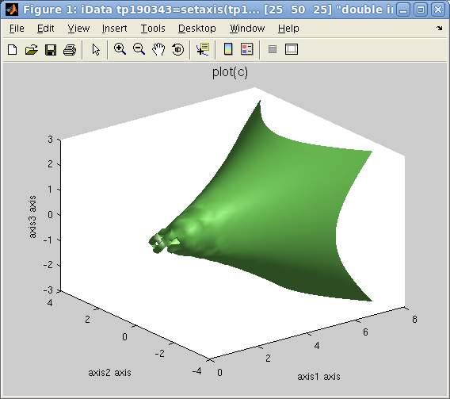
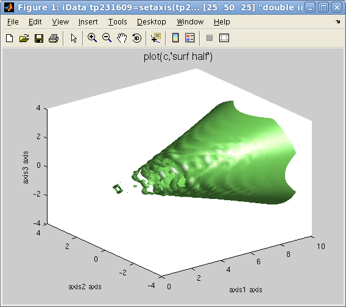
Plot 3D: left=plot(d,'surf')
, right=plot(d,'surf half')
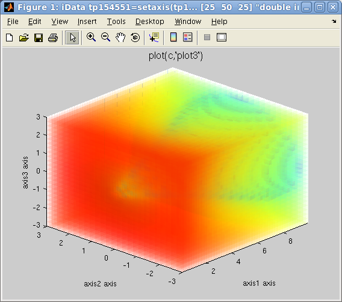 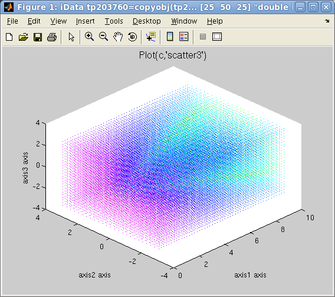
left=plot(d,'plot3')
, right=plot(d,'scatter3')
It is possible, by
right-clicking on the surface or the axis lines, to pop-up a contextual
menu which
provides the following operations:
- an information dialog about the object (see right image above) and
the iFit/iData library version,
- the possibility to duplicate the view into an other window,
- simple way to toggle a grid
- the possibility to smooth the surface appearance, add light and
make it semi-transparent,
- simple way to toggle linear or log scale for the Signal
- simple way to toggle a perspective rendering
- a 'Reset view' item to
re-plot the initial object view.
In addition to the edit and zoom tools ,
a rotate view tool enables to change the
view-point.
Plotting object array
in a single plot (overlay)
All plot functions can be overlay-ed with the usual hold on Matlab
command. However, the iData methods provide an integrated way to plot
an array of objects onto the same figure, such as in the following
example:
>> x=-pi:0.01:pi; a=iData(x,x);
>> a.Error=0; % replace default Error=sqrt(Signal) by no-error.
>> b=sin(a); c=cos(a); d=exp(-a.*a); % create new objects by applying operator on the initial linear one
>> plot([a b c d]); % overlay all objects
This can also be applied to 2D and 3D objects, even though the latter
usually produces a crowded plot.
>> [x,y,z]=peaks; a=iData(x,y*10,z);
>> c=linspace(a,-a+50,10); % continuously go from 'a' to a '-a' in 10 steps
>> plot(c); % plot all on the same figure
which overlays a set of objects, as shown below with a chosen view
angle.
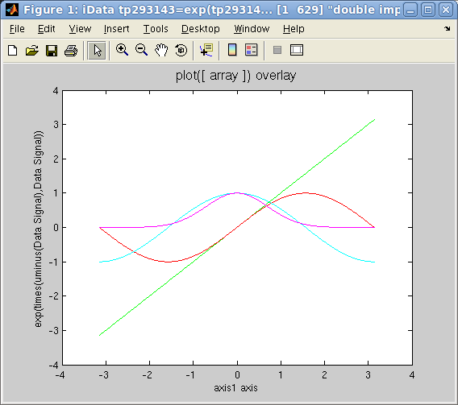 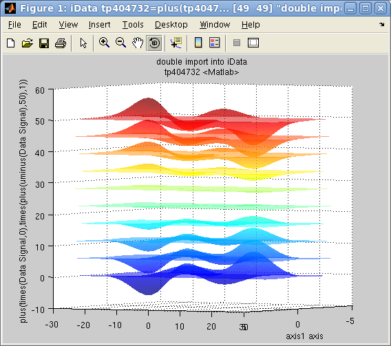
Plot overlay: plot([ array ]):
left=1D, right=2D
Any array of objects can be plotted, including object mix with
dimensionalities 1, 2 or 3.
Side by side
plotting: Single objects and Catenated objects
A common way to plot a set of 1D curves which depend on a parameter is
to plot them side by side, so as to form a surface. Let us build an
array of 1D objects and assign it an additional axis.
>> x=-pi:0.01:pi; a=iData(x,x);
>> a.Error=0; % replace default Error=sqrt(Signal) by no-error.
>> b=sin(a); c=cos(a); d=exp(-a.*a); % create new objects by applying operator on the initial linear one
The objects we have defined are 1D objects. In order to have them
appear in a 2D coordinate frame, one way is to simply assign a new axis
to each object, and then display them as a surface:
>> a{2}=1; b{2}=1.5; c{2}=3; d{2}=5; % assign a new 2D axis single value to each 1D objects
>> plot([a b c d],'surf'); % plot all as a set of lines side by side
Any 2D plotting method among
'surf',
'mesh', 'plot3', 'stem3', 'scatter3' can be requested.
An other way to achieve a similar result is to assemble the 1D objects
into a 2D object, and then define the new axis values:
>> e=cat(2, [a b c d]); % catenate 1D objects into a 2D object along 2nd axis
>> e{2} = [ 1 1.5 3 5 ]; % asign 2nd axis values in one go
>> plot(e,'mesh'); % plot
which has the advantage that the new axis is directly assigned to a
vector, instead of independent single values.
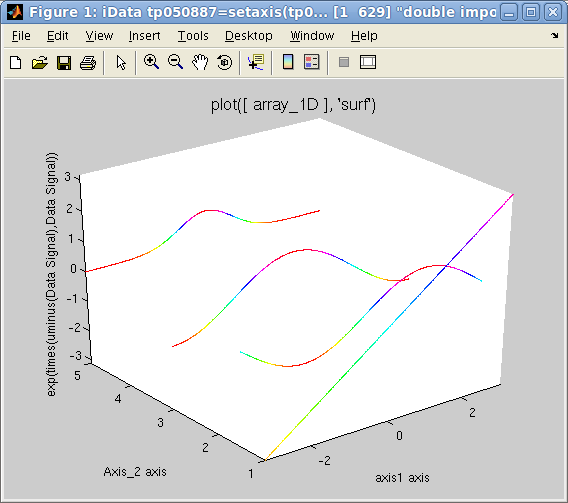
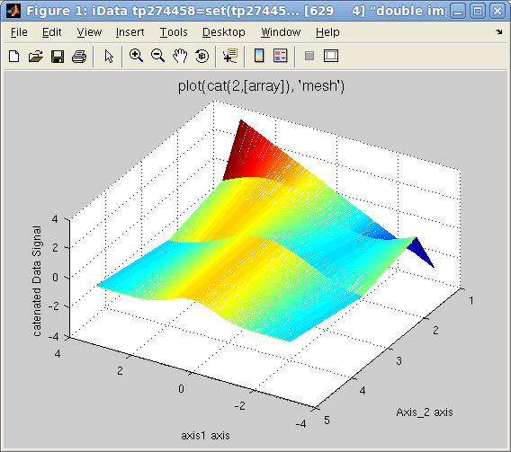
Plots side by side: left=single
assigned plot, right=catenated objects
Plotting object
array in a set of panes (subplot)
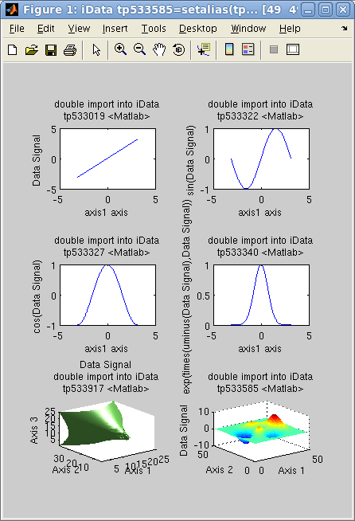In
case
one wish to display a number of objects into tiled independent
coordinate frames, all gathered into the same window, the subplot function
can be used the same way as with the overlay
method shown above.
>> x=-pi:0.01:pi; a=iData(x,x); a.Error=0; % replace default Error=sqrt(Signal) by no-error.
>> b=sin(a); c=cos(a); d=exp(-a.*a); % create new objects by applying operator on the initial linear one
>> e=iData(flow); f=iData(peaks); % create 2D and 3D objects
>> subplot([a b c d e f]); % plot all into a set of separate frames
The number of panes is automatically set to a sensible arrangement but
can be set by hand by giving an additional [m n] vector of tile dimensions.
Plotting projections
and slices
Portions of an object can equally be displayed with plot and subplot.
Plotting projections
The integration operators sum,
camproj and trapz can
be used to produce data projections.
The sum computes the raw
serial sum of the signal along a given dimension. The trapz trapezoidal integration
computes the same, but takes additionally into account the axes values.
Finally, the camproj does the
same as sum, but on all other axes than the one specified. In this
respect, camproj always
produces a 1D vector which is the projection of the object on the
selected dimension.
Plotting simple slices
Data slices can be obtained by selecting subspaces from their
corresponding indices.
Setting plot options:
title, axes labels, axes limits
Setting labels, title
Setting axes limits
Exporting plots as figures and
images
Importing Plots as
iData objects
E.
Farhi - iFit/iData loading data - Oct 2010 - back to
Main
iFit
Page
{kind=link}
{kind=link}
{kind=link}
{kind=link}
{kind=link}
{kind=link}
{kind=link}
{kind=link}
{kind=link}
{kind=link}
{kind=link}
{kind=link}
{kind=link}
{kind=link}